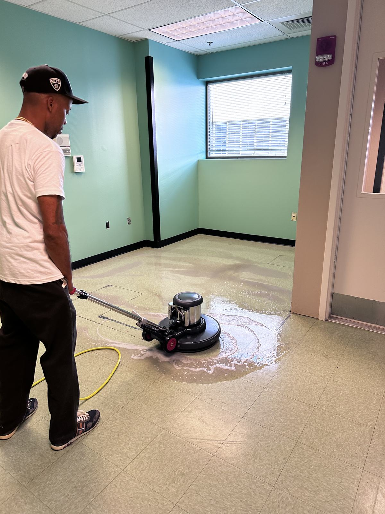

Glens Falls, NY · Gateway to the Adirondacks
Commercial Cleaning & Property Services in Glens Falls, NY
Downtown office janitorial, medical office cleaning, construction cleanup and vacation-rental turnovers for Glens Falls, Queensbury and the Lake George area — with the same crews and 24/7 availability our Albany clients use.

Capital Region standards, Warren County coverage
Glens Falls has a healthcare economy, a reinvested downtown and a tourism season. These are the services that fit.
Downtown janitorial
Recurring cleaning for professional offices, law and financial firms, retail and restaurants on Glen Street and around City Park — after hours, nightly or weekly.
Medical office cleaning
Medical, dental and therapy suites near Glens Falls Hospital and across Queensbury, cleaned consistently with attention to exam rooms and high-touch surfaces.
Post-construction cleaning
Rough, final and touch-up cleans for new builds and renovations downtown and along the Route 9 corridor in Queensbury.
Vacation rental turnovers
Guest-ready turnovers for rentals toward Lake George through the summer season: cleaning, linens, restock and a final walkthrough.
Book a service in Glens Falls
Healthcare, downtown and the tourism economy
Glens Falls sits at the northern edge of the Capital Region — the gateway to the Adirondacks and the commercial hub of Warren County. Its economy has three strong legs: a healthcare sector anchored by Glens Falls Hospital, a downtown that has seen real reinvestment, and a tourism and hospitality season fed by Lake George, Saratoga and the Adirondack Park.
Downtown has cultural anchors like the Hyde Collection art museum, Crandall Public Library and the Cool Insuring Arena, surrounded by offices, restaurants, apartments over storefronts and new development. Just north, Queensbury carries the region's big retail and the SUNY Adirondack campus.
Downtown Glens Falls
Offices, restaurants and retail around Glen Street and City Park. Evening and overnight janitorial with floor care.
Glens Falls Hospital area
Medical and professional offices and healthcare-adjacent suites nearby. Recurring, documented cleaning.
Queensbury & Route 9
Retail, restaurants, office buildings and new construction along the corridor toward Lake George.
Lake George & Warren County
Vacation rentals and hospitality properties with a busy summer season. Turnovers and deep cleans between stays and at season's end.
Glens Falls properties we keep running
Our Warren County clients include downtown office and retail owners, medical practice managers, vacation-rental owners and managers, property managers with apartments over storefronts, and general contractors finishing projects in the area.
Some of them also own property further south, in Saratoga Springs or Albany. Working with one company across the whole Capital Region means one set of documents, one standard of work and one phone number. We send a W-9 and certificate of insurance before the first visit, and we plan routes so a Glens Falls account gets the same attention as one down the street from our base.
For owners who close up for the off-season, we also do end-of-season deep cleans and pre-season openings — a full clean, a check of anything that needs repair, and a list of what we found.
- Downtown offices, law and financial firms
- Medical, dental and therapy practices
- Vacation rentals toward Lake George
- Apartments over downtown storefronts
- Retail and restaurants in Queensbury
- General contractors finishing projects
How a Glens Falls job runs
Walk the property
We walk it with you and set a route and schedule that fits your hours and your season.
Scope and price in 24 hours
A written scope and price, plus W-9 and certificate of insurance before day one.
Same standard, farther north
Our crew does the work, checks it against the scope and stays on call 24/7.
What the work looks like


Also serving near Glens Falls
Same crews, same contract, across the Capital Region.
Questions about service in Glens Falls
Do you really serve Glens Falls from Albany?
Yes. Glens Falls is at the north end of our regular Capital Region coverage, up the Northway from Saratoga. We schedule recurring routes and one-time projects there, and crews are on call 24/7.
Do you clean medical offices near Glens Falls Hospital?
Yes. We clean medical, dental and therapy offices and healthcare-adjacent suites on recurring schedules, with attention to exam rooms, waiting areas, restrooms and high-touch surfaces.
Can you handle vacation rental and hospitality turnovers toward Lake George?
Yes. We turn vacation rentals and clean hospitality properties in the Glens Falls, Queensbury and Lake George area, with linens, restocking and a guest-ready walkthrough between stays.
Do you do post-construction cleaning in Warren County?
Yes. We work with general contractors and developers on new builds and renovations in Glens Falls and Queensbury, doing the rough, final and touch-up cleans so the space is ready for handoff.
How do I get a quote?
Call (518) 948-7156 or send the form below. We walk the property at no charge and send a written scope and price, usually within 24 hours, with a W-9 and certificate of insurance before day one.
Get a quote for your Glens Falls property
Tell us about the property and your season. We will send a written scope and price, usually within 24 hours.
- Fully insured — W-9 and COI before day one
- Trained, supervised crews and one point of contact
- Procurement team? Get our vendor packet